LabVIEW 8.6 编程实例
进入Labview 8.6编程环境，按照下列步骤操作：
1. 打开程序框图面板Block Diagram；选择Instrument I/O→VISA；分别添加以下函数：VISA Open，VISA Read，VISA Write和 VISA Close：
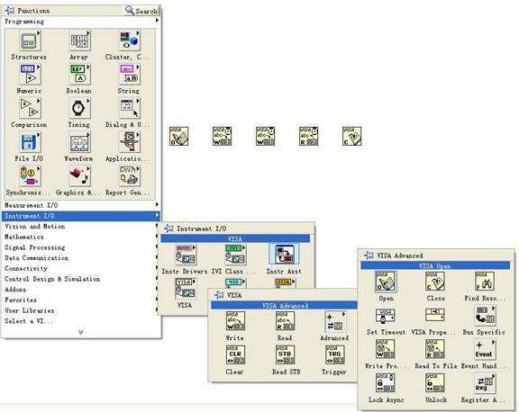
2. 将鼠标移动至VISA Open控件的VISA resource name；右键选择Create→Control：
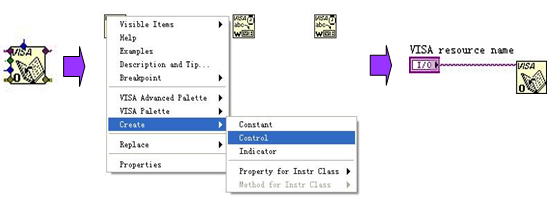
3. 将所有函数的VISA resource name和VISA resource name out连接，error out和error in连接：
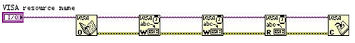
4. 在VISA Write控件的write buffer上添加文本框，分别写入：“:WAV:FORM\sBYTE\n”和“:WAV:DATA?\sCHAN1\n”。前者是设置波形以BYTE格式读取，后者用来读取屏幕波形数据。 此外，再创建一个值为1035的U32整型常量（Mathematics → Numeric → Numeric Constant），并按下图所示连接。
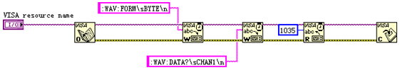
5. 打开前面板Front Panel，从Modern→Graph→Waveform Graph中添加一个波形图控件Waveform Graph；从Modern → Boolean → OK Button ：添加两个按钮，分别用来控制开始捕捉波形和停止程序。参考下图修改控件和按钮的属性。
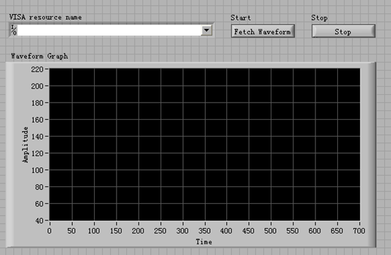
6. 打开程序框图Block Diagram；右键选择Programming → String → String/Array/Path Conversion → String To Byte Array；右键选择Programming → Array → Array Subset，按照图示连接。创建两个I32整型常量，其值分别为11、700，将常量11连接至Array Subset的Index端，将常量700连接至Array Subset的length端，从而去除波形头部数据，将剩余的波形数据传至显示控件显示。
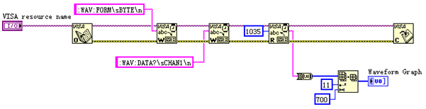
7. 增加一个事件结构 （右击程序框图空白处 → Programming → Structures → Event Structure）：
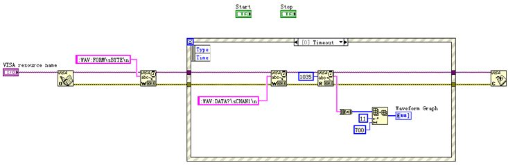
8. 在选择器标签selector label上右键选择Edit Events Handled by This Case或Add Event case分别为按钮添加事件，按Start 捕捉波形，按Stop退出程序。
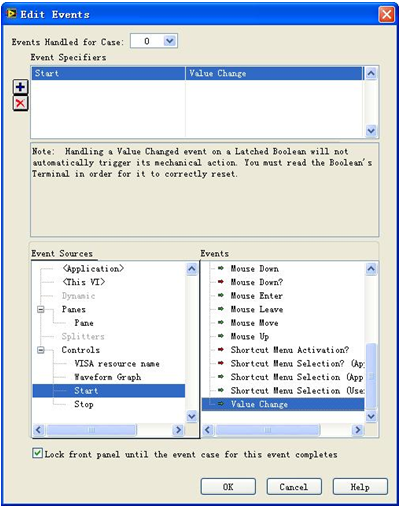
设置好Start的事件后，得到下图所示结果：
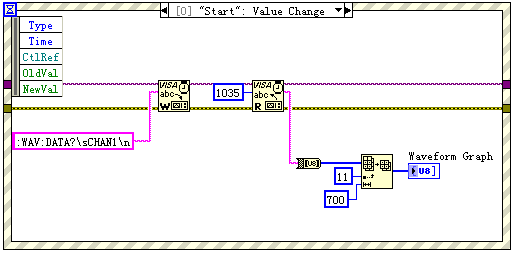
9. 为程序增加一个While循环 （右击程序框图空白处 → Programming → Structures → While Loop）；并添加一个Boolean → True Constant，将Stop按钮的事件指向While退出。
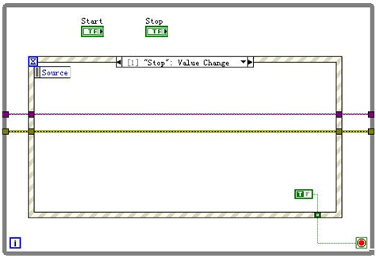
10. 将While循环上的VISA资源名输入和错误输入更改为“Shift Register”，程序的控制就此结束。
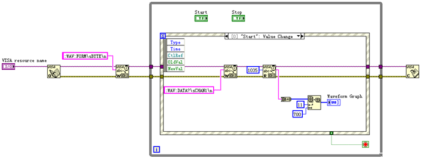
11. 调整前面板Front Panel 的样式，点击“Fetch Waveform” 后可得到如下界面（示波器已正确连接）。
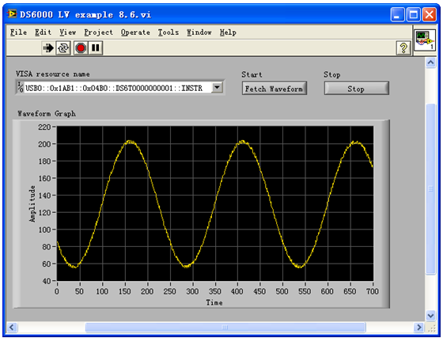